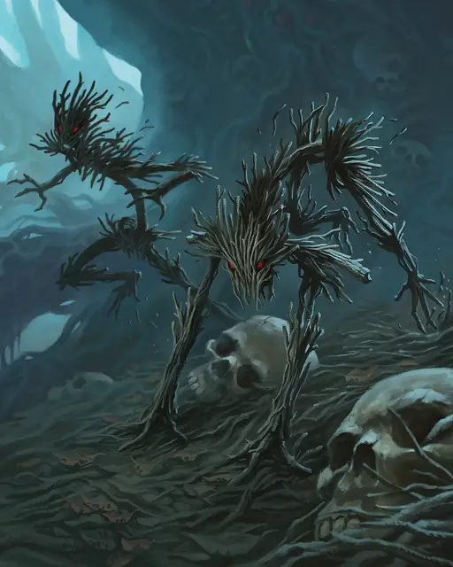

Ветвистая зараза
Twig Blight
Маленькое Растение, Нейтральное Злое

Класс Защиты 14 Инициатива +2 (12)
Хиты 7 (2к6)
Скорость 20 футов
| мод | спас | ||
|---|---|---|---|
| СИЛ | 6 | −2 | −2 |
| ЛОВ | 14 | +2 | +2 |
| ТЕЛ | 11 | +0 | +0 |
| мод | спас | ||
|---|---|---|---|
| ИНТ | 4 | −3 | −3 |
| МДР | 8 | −1 | −1 |
| ХАР | 3 | −4 | −4 |
Уязвимость к урону Огонь
Иммунитеты Оглохший
Чувства пассивное Восприятие 9, Слепое зрение 60 футов
Языки понимает Общий, но не говорит
Опасность 1/8 (25 опыта; БВ +2)
Особенности
Тактика стаи. Ветвистая зараза совершает с Преимуществом броски атаки по существам, если в пределах 5 футов от цели находится союзник заразы, не имеющий состояния Недееспособный.
Действия
Коготь. Бросок рукопашной атаки: +4, досягаемость 5 фт. Попадание: 4 (1к4 + 2) Рубящего урона.
Бонус мастерства +2
Среда обитания Леса
Сокровища Отсутствуют
Заразы
Растения, порождённые злом
Заразы — нечестивые создания, выросшие из глубоких корней зла. Черты их жутких, скрученных, узловатых тел напоминают человеческие конечности и ужасающие челюсти. Заразы прячутся в зарослях зелени и нападают на всех, кроме Растений.
Хотя эти ужасы способны действовать самостоятельно, обычно они подчиняются породившим их зловещим силам или порочным существам, обуздавшим силу природы. Магия, создавшая заразы, часто влияет и на другую растительность, заставляя терновники, вьюны и корявые деревья захватывать дороги и поля, запруживать колодцы и ручьи, вынуждать животных покидать их среду обитания. Появление этих существ — первый признак надвигающейся волны порчи.
Ветвистые заразы выглядят как связки хвороста или мёртвой растительности и умело маскируются среди сухостоя, плавающего в водоёмах мусора, или поленниц, типичных для сельского пейзажа. Их скопления часто встречаются у речных переправ, заброшенных колодцев и лесных опушек, где они поджидают потерявших бдительность путников.